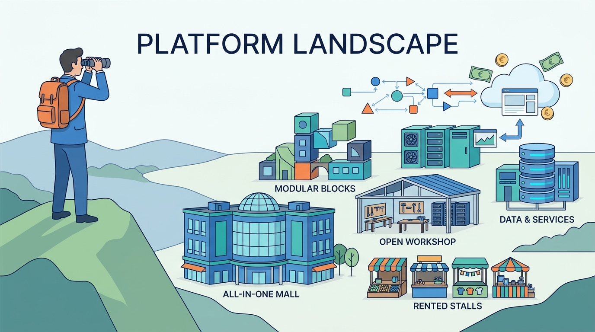

Part I — COMMERCE: What a Commerce Platform Is
Suites, SaaS, Open Source and Composable: The Platform Landscape in 2026
AI-assisted: researched and written with Claude Code and Codex; illustrations generated with Gemini and OpenAI image tools. How this works
